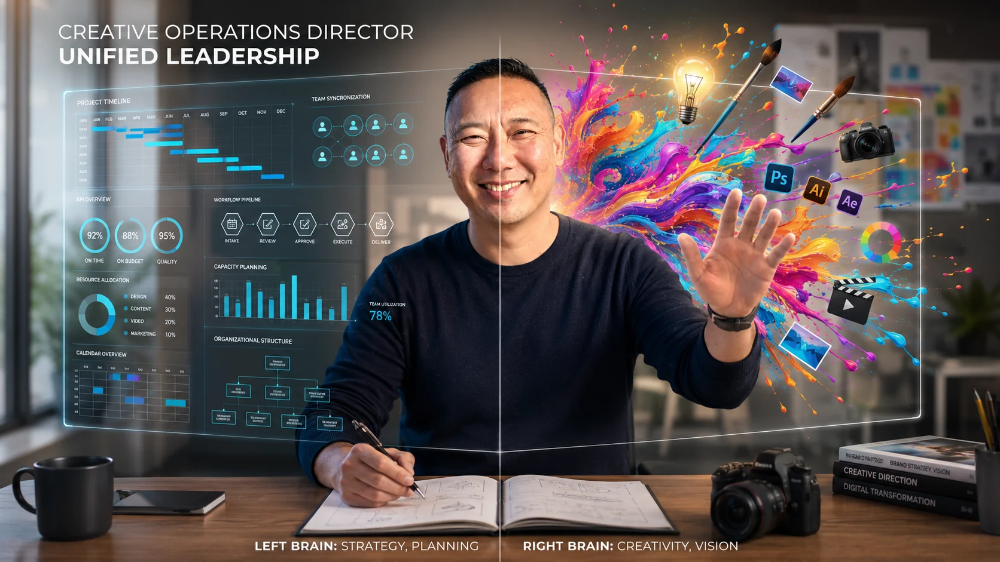

Listen
Understand people, history, data, and constraints before recommending change.
Creative Operations · AI Strategy · Creative Leadership
I help creative and marketing organizations connect vision to execution—bringing clarity to complexity, developing people, and using AI to create more capacity for meaningful work.

How I work
I connect creative direction, workflow design, AI enablement, and people leadership—so teams can move from scattered information to clear decisions and stronger work.
I listen first, gather the information other people miss, identify the real bottleneck, and build a workflow that teams can trust. The outcome is not simply faster creative—it is clearer decisions, stronger partnerships, and more room for talented people to do their best work.
Understand people, history, data, and constraints before recommending change.
Turn scattered context into priorities, briefs, owners, and decision points.
Build repeatable systems that increase capacity without flattening creativity.
Featured case studies
Identified briefing—not asset creation—as the primary bottleneck and built an AI-enabled workflow that turned days of fragmented discovery into an actionable brief in approximately 30 minutes.
Managed a distributed production model across pros, vendors, contracts, creative planning, logistics, and data transfer—creating a repeatable system under a compressed deadline.
Recognized execution risk before it became a crisis, built a contingency plan, created operational visibility, and enabled the team to protect creative delivery for a $3M-per-month performance marketing program.
Capabilities
Intake, prioritization, capacity planning, visibility, SLAs, and resource strategy.
Briefing, research, scripting, concept development, workflow automation, and adoption.
Vision, campaign thinking, multidisciplinary direction, quality, and people development.
Business alignment, presentation, operating plans, cross-functional influence, and change.
How I lead
I believe exceptional people deserve exceptional systems. I listen before changing, communicate the vision in practical terms, and develop people around their strengths, motivations, and potential.
Connect on LinkedIn ↗What is next